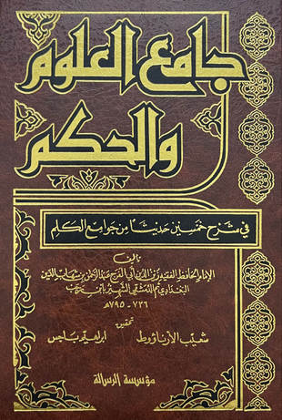

جامع العلوم والحكم - ت الأرنؤوط
ابن رجب الحنبلي (d. 795)
Publisher: مؤسسة الرسالة - بيروت
Read 1,052 pages · 2 parts
ابن رجب الحنبلي (٧٣٦ - ٧٩٥ هـ، ١٣٣٦ - ١٣٩٣ م).
زين الدين عبد الرحمن بن أحمد بن رجب بن الحسن، السَلامي، البغدادي، ثم الدمشقي، الحنبلي، الواعظ. الإمام الحافظ، المحدّث، الفقيه، ولد في بغداد وسمع من أبي الفتح الميدومي.
له مصنفات عديدة، منها:
• شرح الترمذي
• شرح علل الترمذي
• طبقات الحنابلة
• فتح الباري شرح صحيح البخاري لم يتمه
• جامع العلوم والحكم شرح خمسين حديثًا من جوامع الكلم؛
• التوحيد
وغيرها.
نشأ وتوفي بدمشق.
نقلا عن
الموسوعة العربية العالمية http://www.mawsoah.net
- أحكام الاختلاف في رؤية هلال ذي الحجة
- أحكام الخواتيم
- أسباب المغفرة
- أهوال القبور وأحوال أهلها إلى النشور
- اختيار الأولى في شرح حديث اختصام الملأ الأعلى - ت الدوسري
- اختيار الأولى في شرح حديث اختصام الملأ الأعلى - ضمن مجموع رسائل ابن رجب
- استنشاق نسيم الأنس من نفحات رياض القدس
- الاستخراج لأحكام الخراج
- البشارة العظمى للمؤمن بأن حظه من النار الحمى
- التخويف من النار والتعريف بحال دار البوار
- التخويف من النار والتعريف بحال دار البوار
- الحكم الجديرة بالإذاعة - ت الأرنؤوط
- الحكم الجديرة بالإذاعة - ضمن مجموع رسائل ابن رجب
- الذل والانكسار للعزيز الجبار
- الرد على من اتبع غير المذاهب الأربعة
- الفرق بين النصيحة والتعيير
- الفرق بين النصيحة والتعيير
- القاعدة الذهبية لا ضرر ولا ضرار
- القول الصواب في تزويج أمهات أولاد الغياب
- الكلام على قوله تعالى {إنما يخشى الله من عباده العلماء}
- المحجة في سير الدلجة
- بيان فضل علم السلف على علم الخلف
- تسلية نفوس النساء والرجال عند فقد الأطفال
- تسلية نفوس النساء والرجال عند فقد الأطفال
- تفسير ابن رجب الحنبلي
- تفسير سورة الإخلاص
- تفسير سورة الفاتحة لابن رجب
- تفسير سورة النصر
- جامع العلوم والحكم - ت أبي النور
- جامع العلوم والحكم - ت الأرنؤوط
- جامع العلوم والحكم - ت الفحل
- جزء فيه الكلام على حديث يتبع الميت ثلاث
- جزء من الكلام على حديث شداد بن أوس «إذا كنز الناس الذهب والفضة»
- ذم الخمر
- ذم قسوة القلب
- ذيل طبقات الحنابلة - لابن رجب - ت العثيمين
- ذيل طبقات الحنابلة - لابن رجب - ت الفقي
- رسالة في رؤية هلال ذي الحجة
- سيرة عبد الملك بن عمر بن عبد العزيز
- شرح حديث «إن أغبط أوليائي»
- شرح حديث «لبيك اللهم لبيك»
- شرح حديث «ما ذئبان جائعان»
- شرح حديث «مثل الإسلام»
- شرح حديث عمار بن ياسر - رضي الله عنه -
- شرح حديث لبيك اللهم لبيك
- شرح علل الترمذي
- صدقة السر وفضلها
- غاية النفع في شرح حديث «تمثيل المؤمن بخامة الزرع»
- فتح الباري لابن رجب
- فضائل الشام
- فضل علم السلف على علم الخلف
- قاعدة في إخراج الزكاة على الفور
- قواعد ابن رجب - ت مشهور
- قواعد ابن رجب - ط الخانجي
- قواعد ابن رجب - ط ركائز
- كشف الكربة في وصف أهل الغربة
- كشف الكربة في وصف حال أهل الغربة
- كلمة الإخلاص وتحقيق معناها - ضمن رسائل ابن رجب
- كلمة الإخلاص وتحقيق معناها - ط المكتب الإسلامي
- لطائف المعارف فيما لمواسم العام من الوظائف - ت السواس
- لطائف المعارف فيما لمواسم العام من الوظائف - ت عامر
- لطائف المعارف فيما لمواسم العام من الوظائف - ت عوض الله
- لطائف المعارف فيما لمواسم العام من الوظائف - ط ابن حزم
- مجموع رسائل ابن رجب
- مختصر في معاملة الظالم السارق
- مقدمة تشتمل على أن جميع الرسل كان دينهم الإسلام
- نزهة الأسماع في مسألة السماع «أحكام الغناء والمعازف»
- نور الاقتباس في مشكاة وصية النبي - صلى الله عليه وسلم - لابن عباس
- ورثة الأنبياء شرح حديث أبي الدرداء
About the book
- الكتاب
- جامع العلوم والحكم في شرح خمسين حديثا من جوامع الكلم
- المؤلف
- زين الدين أبو الفرج عبد الرحمن بن شهاب الدين البغدادي ثم الدمشقي الشهير بابن رجب (٧٣٦ - ٧٩٥ هـ)
- المحقق
- شعيب الأرناؤوط [ت ١٤٣٨ هـ]- إبراهيم باجس
- الناشر
- مؤسسة الرسالة - بيروت
- الطبعة
- السابعة، ١٤١٧ هـ - ١٩٩٧ م
- عدد الأجزاء
- ٢ (في مجلد واحد)
- ترقيم الكتاب موافق للمطبوع
- صفحة المؤلف
- ابن رجب الحنبلي
PDFs
Downloads need an internet connection.
- 01_157821 7.7MB · 532 pages
- جامع العلوم والحكم في شرح خمسين حديثا من جوامع الكلم 7.7MB · 540 pages
- 7.5MB · 532 pages
- جامع العلوم والحكم في شرح خمسين حديثا من جوامع الكلم 7.6MB · 540 pages
Other editions
- جامع العلوم والحكم - ت الفحل
- جامع العلوم والحكم - ت أبي النور
Books sharing the most passages with it
| Book | Author | Shared passages |
|---|---|---|
| جامع العلوم والحكم - ت الفحل | ابن رجب الحنبلي | 1,315 |
| جامع العلوم والحكم - ت أبي النور | ابن رجب الحنبلي | 1,293 |
| البحر المحيط الثجاج في شرح صحيح الإمام مسلم بن الحجاج | محمد بن علي بن آدم الأثيوبي | 906 |
| جمع الجوامع المعروف بـ «الجامع الكبير» | الجلال السيوطي | 821 |
| المسند الموضوعي الجامع للكتب العشرة | صهيب عبد الجبار | 816 |
| المسند المصنف المعلل | مجموعة من المؤلفين | 805 |
| فتاوى الشبكة الإسلامية | مجموعة من المؤلفين | 729 |
| المسند الجامع | مجموعة من المؤلفين | 721 |
| الجامع الكامل في الحديث الصحيح الشامل المرتب على أبواب الفقه | محمد ضياء الرحمن الأعظمي | 706 |
| جامع الأحاديث | الجلال السيوطي | 693 |
| مسند أحمد - ط الرسالة | أحمد بن حنبل | 675 |
| كنز العمال في سنن الأقوال والأفعال - ط الرسالة | المتقي الهندي | 655 |
In the catalogue
Contents
- مقدمة التحقيق
- الطبعات السابقة لهذا الشرح
- وصف الأصول المعتمدة
- ترجمة المؤلف
- اسمه ونسبه وولادته
- بداية طلبه للعلم
- شيوخه في الإجازة
- تلاميذه
- ثناء أهل العلم عليه
- تصانيفه
- ففي علوم القرآن
- في الحديث
- في الفقه
- في التراجم
- تصانيفه في الوعظ والفضائل والرقائق
- وفاته
- مقدمة المؤلف
- الحديث الأول
- فصل
- الحديث الثاني
- فصل
- فصل
- الحديث الثالث
- الحديث الرابع
- الحديث الخامس
- الحديث السادس
- الحديث السابع
- الحديث الثامن
- الحديث التاسع
- الحديث العاشر
- الحديث الحادي عشر
- الحديث الثاني عشر
- الحديث الثالث عشر
- الحديث الرابع عشر
- الحديث الخامس عشر
- الحديث السادس عشر
- الحديث السابع عشر
- الحديث الثامن عشر
- الحديث التاسع عشر
- الحديث العشرون
- الحديث الحادي والعشرون
- الحديث الثاني والعشرون
- الحديث الثالث والعشرون
- الحديث الرابع والعشرون
- الحديث الخامس والعشرون
- الحديث السادس والعشرون
- الحديث السابع والعشرون
- الحديث الثامن والعشرون
- الحديث التاسع والعشرون
- الحديث الثلاثون
- الحديث الحادي والثلاثون
- الحديث الثاني والثلاثون
- الحديث الثالث والثلاثون
- الحديث الرابع والثلاثون
- الحديث الخامس والثلاثون
- الحديث السادس والثلاثون
- الحديث السابع والثلاثون
- الحديث الثامن والثلاثون
- الحديث التاسع والثلاثون
- الفصل الأول في الخطأ والنسيان
- الفصل الثاني في حكم المكره
- الحديث الأربعون
- الحديث الحادي والأربعون
- الحديث الثاني والأربعون
- الحديث الثالث والأربعون
- الحديث الرابع والأربعون
- الحديث الخامس والأربعون
- الحديث السادس والأربعون
- الحديث السابع والأربعون
- الحديث الثامن والأربعون
- الحديث التاسع والأربعون
- الحديث الخمسون
- فصل في وظائف الذكر الموظفة في اليوم والليلة
- فصل